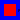

This package contains vibrating string equation solved with the Method of Lines.
Release Notes:
| Name | Description |
|---|---|
| VibratingString | |
|  VibratingStringAnalytical |
Implements the vibrating string equation. The finite vibrating string of length L (L = 1 in this problem) is described by the wave equation together with special boundary and initial conditions. The complete problem is

where c is a constant value.
The analytical solution of this problem is implemented in VibratingStringAnalytical block.
Release Notes:
model VibratingString
inner PDE.World.worldModel worldModel1(qss=1, n=40);
Modelica.Blocks.Sources.RealExpression BCv;
Modelica.Blocks.Sources.RealExpression ICv[worldModel1.n];
Modelica.Blocks.Math.Product product[worldModel1.n];
Modelica.Blocks.Sources.RealExpression Friction[worldModel1.n](y=0.0);
Modelica.Blocks.Math.Add add[worldModel1.n];
Modelica.Blocks.Math.Product product1[worldModel1.n];
Modelica.Blocks.Sources.RealExpression alpha2[worldModel1.n](y=1.0);
PDE.MOL.Examples.VibratingString.VSIC vSIC;
PDE.MOL.Examples.VibratingString.VibratingStringAnalytical
vibratingStringAnalytical;
Integrator.UniversalIntegrator u(
vb=2,
ve=worldModel1.n - 1,
icb=2,
ice=worldModel1.n - 1,
bcl=1,
bcr=1);
Integrator.UniversalIntegrator v(
vb=2,
ve=worldModel1.n - 1,
icb=2,
ice=worldModel1.n - 1,
bcl=1,
bcr=1);
Modelica.Blocks.Sources.RealExpression BCu;
PDE.MOL.SpaceDerivative.Derivatives.u_xx u_xx;
equation
connect(product.y, add.u2);
connect(Friction.y, product.u1);
connect(alpha2.y, product1.u1);
connect(product1.y, add.u1);
connect(BCv.y, v.u3);
connect(BCv.y, v.u2);
connect(ICv.y, v.u1);
connect(BCu.y, u.u3);
connect(BCu.y, u.u2);
connect(vSIC.y, u.u1);
connect(v.y, u.u);
connect(add.y, v.u);
connect(v.y, product.u2);
connect(u_xx.y, product1.u2);
connect(u.y, u_xx.u);
end VibratingString;

Implements the initial condition

for the u block of vibrating string equation.
Release Notes:
| Type | Name | Default | Description |
|---|---|---|---|
| Integer | n | worldModel1.n |
| Type | Name | Description |
|---|---|---|
| output RealOutput | y[worldModel1.n] |
block VSIC
extends Icons.BlockIcon;
outer PDE.World.worldModel worldModel1;
parameter Integer n = worldModel1.n;
protected
Real pi = 3.14;
equation
for i in 1:n loop
y[i] = sin(pi*(i-1)/(n-1)) + 0.5*sin(3*pi*(i-1)/(n-1));
end for;
public
Modelica.Blocks.Interfaces.RealOutput y[worldModel1.n];
end VSIC;
Implements the analytical solution of the vibrating string equation

Release Notes:
| Type | Name | Default | Description |
|---|---|---|---|
| Integer | n | worldModel1.n | |
| Real | alpha | 1.0 |
| Type | Name | Description |
|---|---|---|
| output RealOutput | y[worldModel1.n] |
block VibratingStringAnalytical
extends Icons.BlockIcon4;
outer PDE.World.worldModel worldModel1;
parameter Integer n = worldModel1.n;
parameter Real alpha = 1.0;
protected
Real pi = 3.14;
equation
for i in 1:n loop
y[i] = (sin(pi*(i-1)/(n-1)))*(cos(pi*alpha*time)) + 0.5*(sin(3*pi*(i-1)/(n-1)))*(cos(3*pi*alpha*time));
end for;
public
Modelica.Blocks.Interfaces.RealOutput y[worldModel1.n];
end VibratingStringAnalytical;